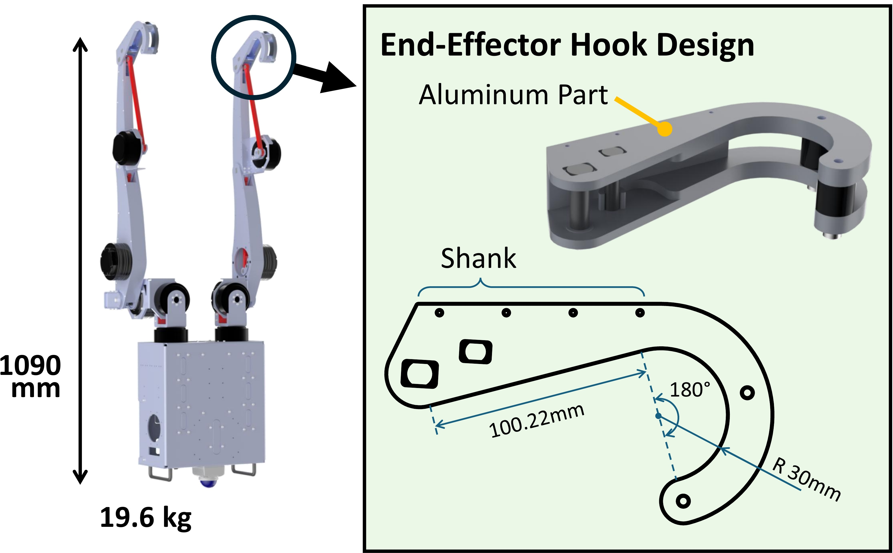
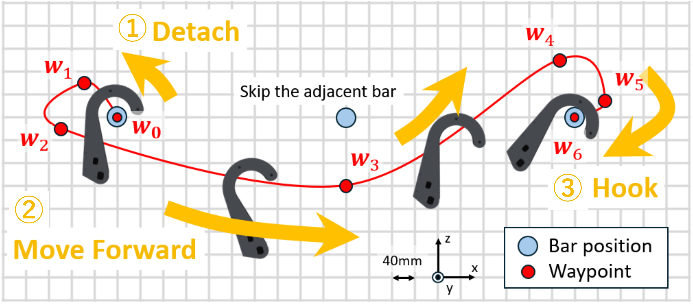
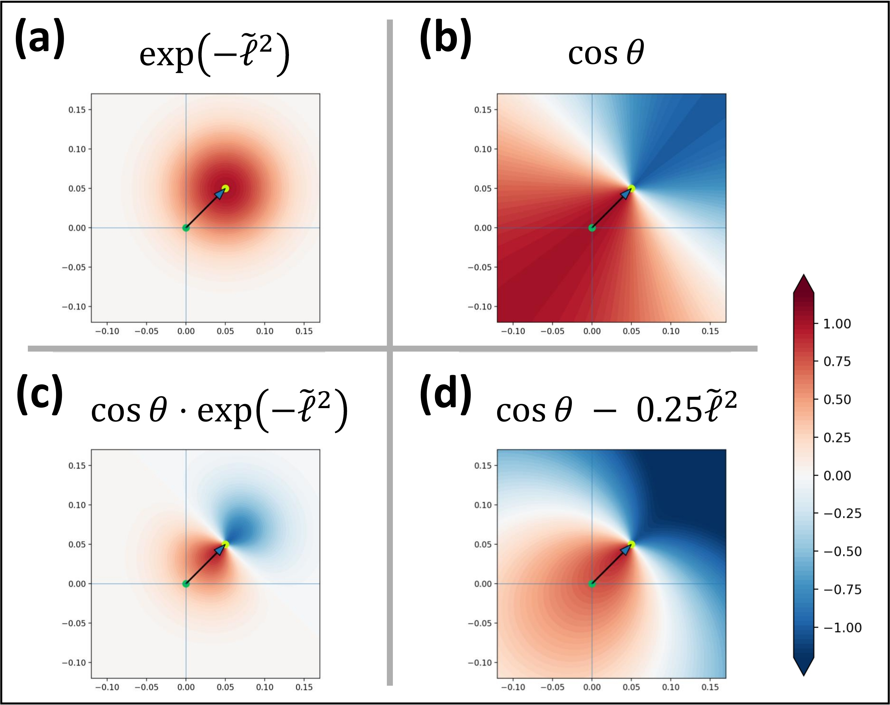
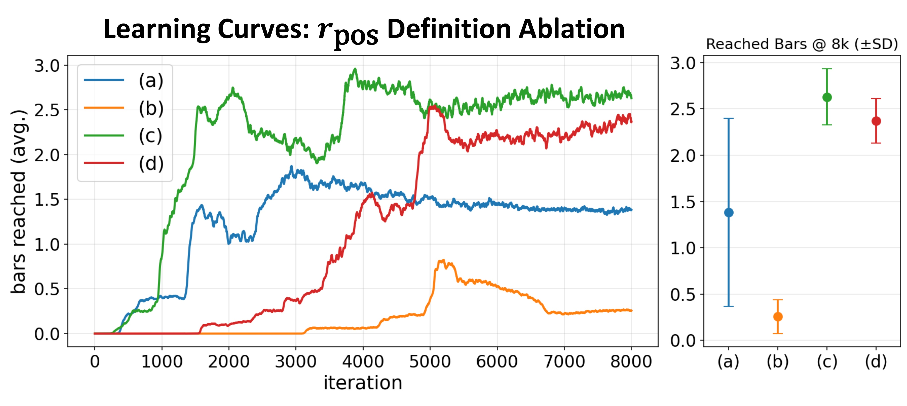
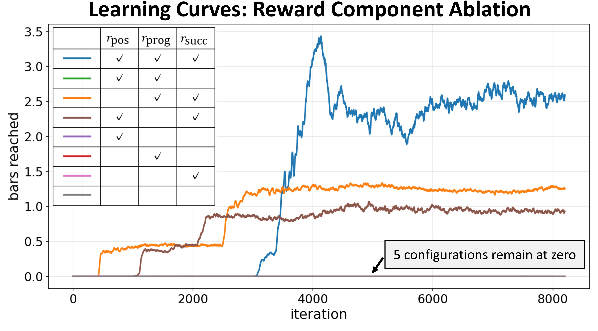
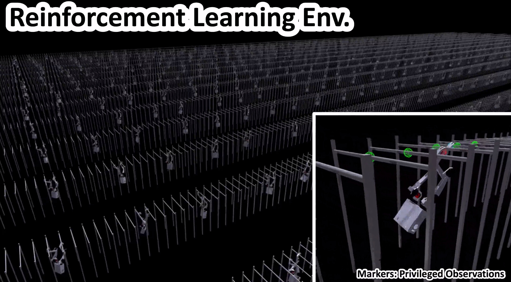

Robust Brachiation on a Life-Sized Dual-Arm Robot Using
Waypoint-Guided Reinforcement Learning
2026 IEEE/RSJ International Conference on Intelligent Robots and Systems (IROS)
 arXiv
arXiv
Abstract
Brachiation is a form of locomotion in which primates move primarily using their arms, enabling traversal in environments without footholds. However, this motion requires highly coordinated whole-body movement and precise timing control for bar grasping and release. As a result, achieving robust behavior on life-sized robotic platforms remains challenging. In this study, we present a reinforcement learning-based method to realize brachiation on a life-sized dual-arm robot. The core of the proposed approach is Waypoint-Guided Reinforcement Learning (WGRL), a learning framework for inducing non-linear and complex motions. For high-difficulty tasks where imitation learning data are unavailable, WGRL guides behavior acquisition by sparsely specifying waypoints for the end-effector trajectory, while whole-body motion is generated through reinforcement learning. In addition, by integrating the waypoint-following guidance with rewards based on task success and mechanical energy, and training in an environment designed for Sim-to-Real transfer, the proposed method achieves both forward progression and motion stability. The acquired behavior is evaluated through Sim-to-Sim experiments under monkey-bar environments with geometric variations and hardware experiments, confirming robust brachiation including failure recovery behavior. This study provides effective learning design guidelines for realizing arm-based locomotion on life-sized robotic hardware and expanding the traversable workspace of robots.
Life-Sized Dual-Arm Robot
We use a dual-arm robot modeled after the upper body of an adult human. The robot is 1093 mm tall and weighs 19.6 kg. Each arm has five degrees of freedom: shoulder roll, pitch, and yaw, elbow pitch, and wrist pitch. The end-effectors are hook-shaped hands designed to catch the bars and securely suspend the robot during brachiation.

Waypoint-Guided Reinforcement Learning
Waypoint-Guided Reinforcement Learning (WGRL) guides task-critical representative points through a sequence of waypoints while leaving whole-body motion generation to exploration through reinforcement learning. For brachiation, seven points, consisting of the initial and final points and five intermediate waypoints, are specified for the end-effector to guide its motion. This design enables the acquisition of complex brachiation locomotion that combines dexterous end-effector motion with coordinated whole-body dynamics. Furthermore, curriculum learning progressively relaxes the waypoint guidance, improving the robustness of the resulting behavior.

WGRL is implemented using rewards that encourage the end-effector to follow the specified waypoints. To optimize this reward design, we compared several definitions of the position reward rpos, which evaluates the spatial relationship between the end-effector and its current target waypoint. The results show that reward definitions considering not only the distance to the target but also the direction from which the end-effector approaches it achieve more stable learning and higher motion-acquisition performance.


In addition to the position reward rpos, we define a progress reward rprog based on the rate of approach to the target and a sparse success reward rsucc given when the target waypoint is reached. We conducted an ablation study comparing different combinations of these three reward components. The results show that rsucc is essential as an explicit incentive for waypoint traversal, but is insufficient on its own. Combining all three reward terms yielded the best performance, enabling stable learning and successful acquisition of brachiation behavior.

Brachiation Reinforcement Learning Environment
In addition to the waypoint-following rewards of WGRL, the overall reward function includes a forward-progression reward proportional to the number of bars reached from the start, a reward that suppresses excessive growth in mechanical energy, and penalties for falling and unstable motions. To facilitate Sim-to-Real transfer, we further introduce domain randomization, randomization of the monkey-bar configuration, and observation noise during training.

Sim-to-Sim Experiment
We applied the learned policy to a MuJoCo Sim-to-Sim environment. In addition to a regularly aligned monkey-bar course, the robot achieved adaptive and stable brachiation on rough courses, as well as on previously unseen up-and-down and circular courses that were not included in the reinforcement learning environment. We attribute this result to the ideal end-effector trajectory induced by WGRL, which makes a large wrapping motion around the bar and provides sufficient clearance for grasping, as well as to the improved robustness achieved through curriculum learning and domain randomization.
Sim-to-Real Experiment
In the Sim-to-Real experiment, the learned policy was transferred to the real robot in a zero-shot manner, achieving continuous brachiation across four bars. Even when the robot failed to grasp a bar on its first attempt, it avoided falling, rebuilt its swing, and attempted to grasp the bar again. We consider this failure-recovery behavior to be an emergent control strategy acquired through the learning environment, which combines rewards for forward progression with penalties for falling.
BibTeX
@inproceedings{iwata2026wgrl,
title={{Robust Brachiation on a Life-Sized Dual-Arm Robot Using Waypoint-Guided Reinforcement Learning}},
author={Ayumu Iwata and Kento Kawaharazuka and Keita Yoneda and Takahiro Hattori and Kei Okada},
booktitle={2026 IEEE/RSJ International Conference on Intelligent Robots and Systems (IROS)},
year={2026},
}
Contact
If you have any questions, please feel free to contact Ayumu Iwata at a-iwata@jsk.imi.i.u-tokyo.ac.jp.